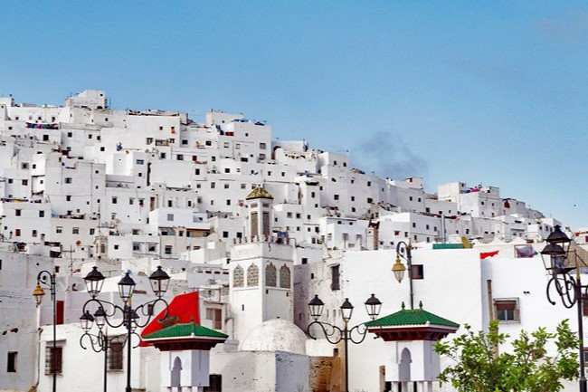
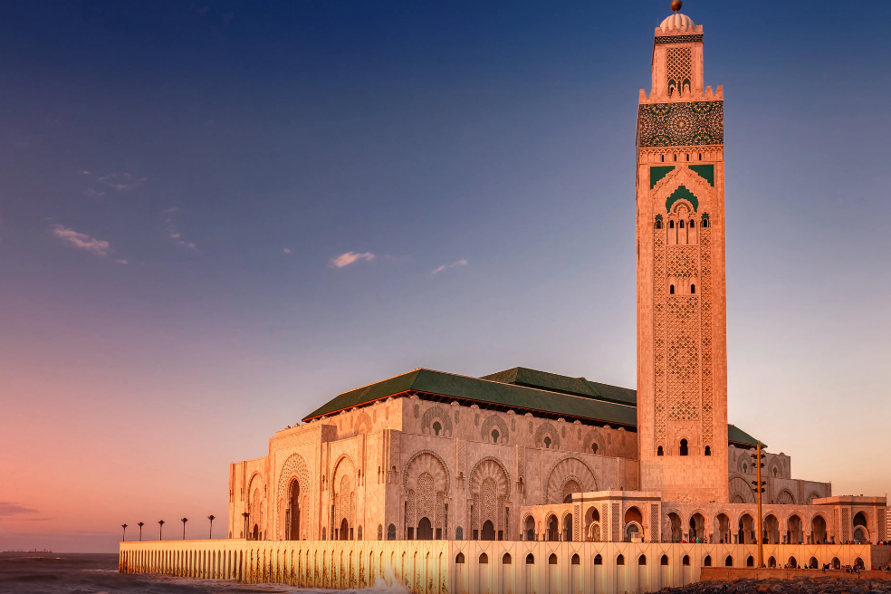
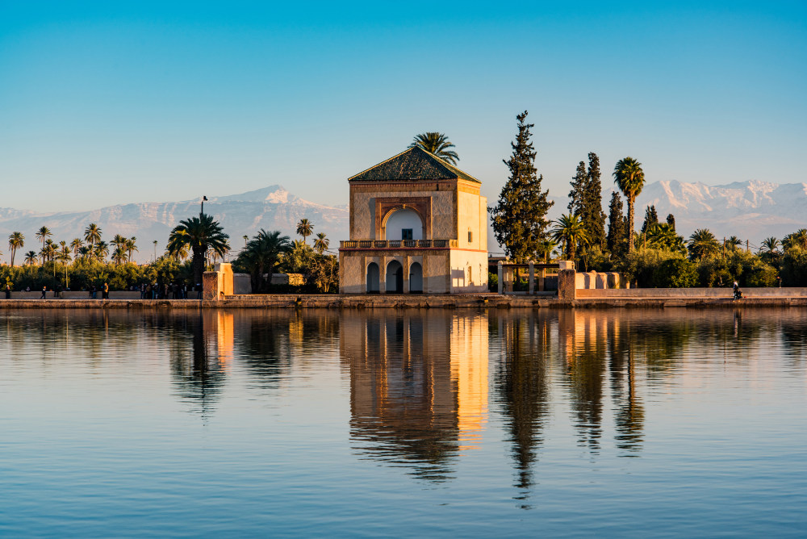
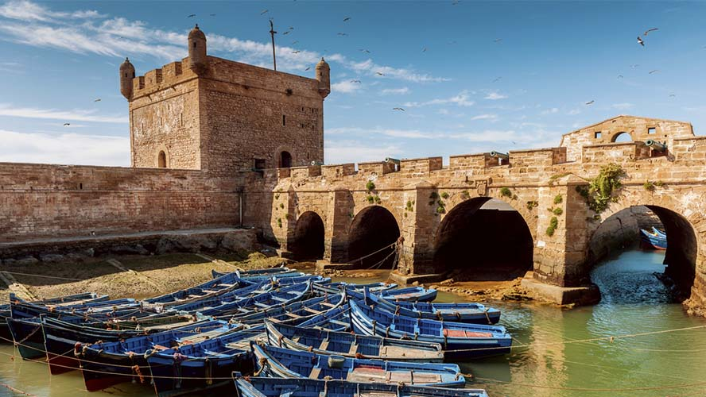

Some Cities of Morocco
| Tangier | Tetouan | Casablanca | Marrakesh | Essaouira |
|---|---|---|---|---|

|
 |  |  |  |
|
Called by the Bride of the North |
The white Dove |
The economical capital |
Known as the red city |
A city of Fishing |